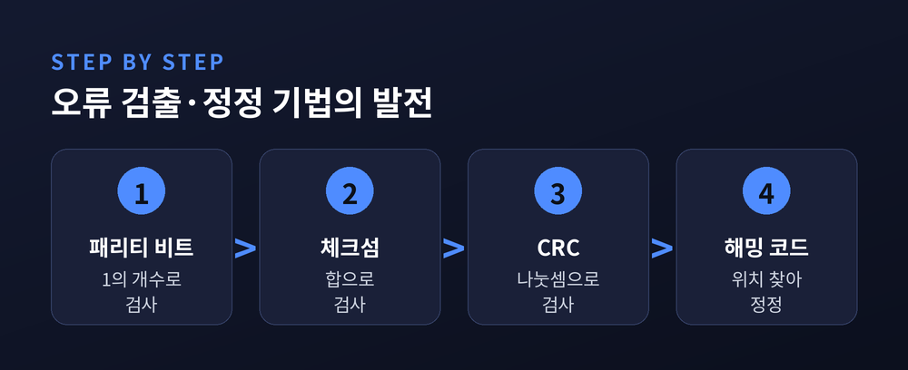
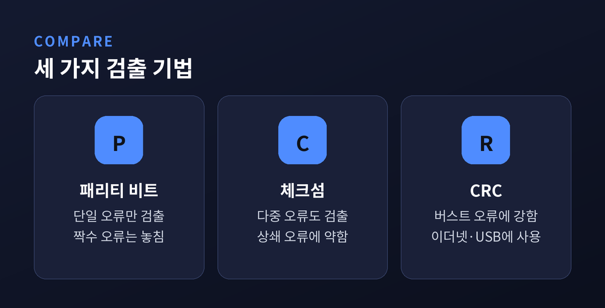
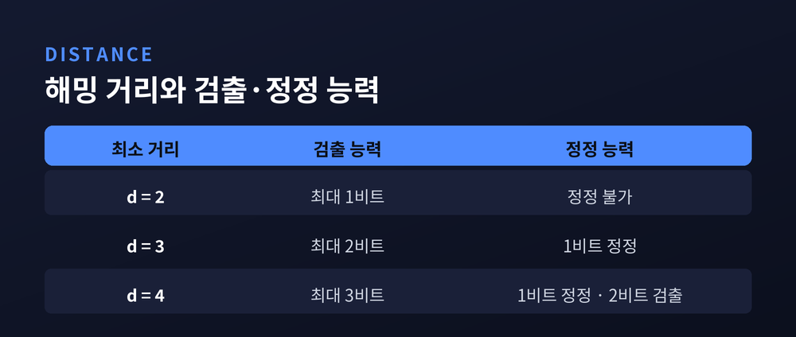
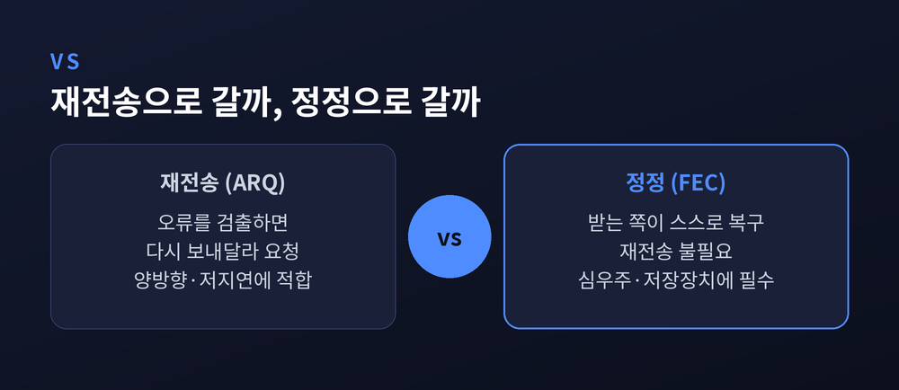
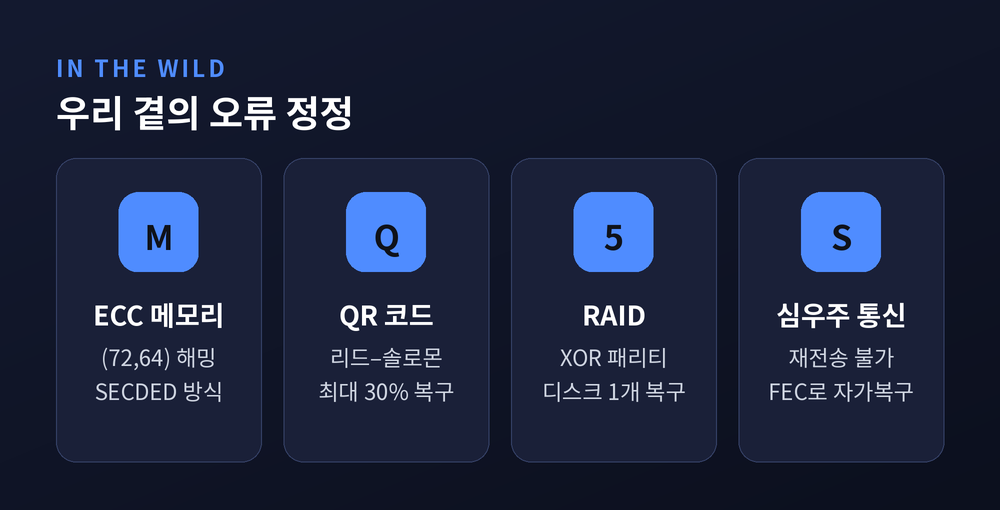

이번 글에서는 컴퓨터가 손상된 데이터를 어떻게 알아채고, 어떻게 스스로 바로잡는지를 정리해 보겠습니다.
패리티 비트에서 시작해 체크섬, CRC, 해밍 코드까지 차례로 따라갑니다.
핵심 질문은 하나입니다. 비트 하나가 뒤집혔을 때, 우리는 그것을 알 수 있을까요. 나아가 고칠 수 있을까요.
디지털 데이터는 완벽하게 전달되지 않습니다.
네트워크를 지날 때는 전자기 간섭과 신호 감쇠를 겪습니다. 디스크나 메모리에 머무를 때는 매체 열화와 우주 방사선을 만납니다.
그 결과 비트 하나가 0에서 1로, 혹은 1에서 0으로 뒤집힙니다. 단 한 비트만 바뀌어도 숫자 하나가, 글자 하나가, 때로는 파일 전체가 달라집니다.
해결의 뼈대는 의외로 단순합니다. 원본에 계산된 여분(redundancy) 비트를 덧붙이는 것입니다.
받는 쪽이 같은 계산을 다시 해서 값이 맞는지 봅니다. 어긋나면 오류가 생긴 것입니다.
여기서 길이 두 갈래로 갈립니다. 오류가 났다는 사실만 아는 검출, 그리고 오류의 위치를 찾아 되돌리는 정정입니다.

가장 오래된 방법은 패리티 비트입니다.
데이터 안에 있는 1의 개수가 홀수인지 짝수인지를 표시하는 비트 하나를 덧붙입니다. 짝수 패리티라면, 전체 1의 개수가 짝수가 되도록 그 비트를 정합니다.
계산이 빠르고 비용이 거의 들지 않습니다.
문제는 능력의 한계입니다. 비트 두 개가 동시에 뒤집히면 1의 개수는 다시 짝수로 돌아옵니다. 패리티는 아무 일도 없었다고 판단합니다.
짝수 개의 오류를 놓친다. 이것이 패리티의 결정적 약점입니다. 위치를 모르니 정정도 못 합니다.
패리티보다 넓게 보려면 검사 단위를 키워야 합니다.
체크섬은 데이터를 일정한 크기로 잘라 모두 더합니다. TCP 체크섬이 대표적입니다. 16비트 워드들을 1의 보수로 더하고, 넘친 자리는 하위로 되돌려 다시 더한 뒤, 마지막에 합을 반전합니다.
단순 패리티보다는 훨씬 많은 오류를 잡아냅니다. 다만 빈틈이 있습니다. 한 워드가 늘고 다른 워드가 그만큼 줄면, 오류가 서로 상쇄되어 합이 그대로입니다. 이런 패턴은 놓칩니다.
CRC는 접근이 다릅니다. 덧셈이 아니라 이진 다항식 나눗셈을 씁니다.
미리 정한 생성 다항식으로 데이터가 정확히 나누어떨어지도록 여분 비트를 붙입니다. 받는 쪽은 같은 다항식으로 나눠 나머지가 0인지만 봅니다.
이더넷이 쓰는 CRC-32의 생성 다항식은 0x04C11DB7입니다. 이더넷 프레임 끝의 FCS가 바로 이 32비트 CRC입니다.
CRC의 강점은 버스트 오류에 있습니다. 신호가 순간적으로 뭉텅이째 망가지는 경우죠. 생성 다항식의 차수가 N이면, 길이 N비트 이하의 연속 오류는 빠짐없이 검출됩니다. 그래서 이더넷, USB, 저장장치가 한결같이 CRC를 택합니다.

여기까지는 모두 "틀렸다"까지만 말합니다. "어디가 틀렸다"는 다른 차원의 문제입니다.
그 열쇠가 해밍 거리입니다. 같은 길이의 두 비트열에서 서로 다른 자리의 개수를 뜻합니다. 1011과 1001은 한 자리가 다르니 거리 1입니다.
코드가 쓰는 유효한 값들 사이의 최소 거리, 즉 최소 해밍 거리(d_min)가 능력을 결정합니다.
관계는 간명합니다. s개의 오류를 항상 검출하려면 d_min이 s+1이면 됩니다. t개의 오류를 항상 정정하려면 d_min이 2t+1이어야 합니다.
정정에 거리가 두 배 가까이 더 드는 이유가 있습니다. 검출은 "유효한 값이 아니다"만 알면 됩니다. 정정은 "변형된 값이 원래 어느 값에 가장 가까운가"까지 짚어야 합니다.
유효한 값들이 서로 멀찍이 떨어져 있을수록, 조금 흐트러진 데이터도 가장 가까운 원본으로 되돌릴 수 있습니다.

이 원리를 실제 코드로 구현한 것이 해밍 코드입니다.
해밍 (7,4) 코드는 데이터 4비트에 패리티 3비트를 더해 7비트를 만듭니다. 패리티 세 개는 데이터 비트들을 서로 겹치게 검사합니다. 어떤 두 패리티도 똑같은 조합을 검사하지 않도록 배치됩니다.
받는 쪽은 패리티를 다시 계산합니다. 어긋난 패리티들의 패턴을 신드롬(syndrome)이라 부릅니다.
여기에 우아한 장치가 있습니다. 잘 설계된 코드에서는 신드롬 값이 곧 틀린 비트의 위치(주소)가 됩니다. 신드롬이 0이 아니면, 그 위치의 비트를 뒤집어 바로잡습니다. 재전송은 필요 없습니다.
다만 이 코드는 코드워드당 오류 하나를 가정합니다. 오류가 둘이면 엉뚱하게 고칠 수 있습니다.
그래서 패리티를 하나 더 붙여 d_min을 4로 올린 확장 해밍 코드가 있습니다. 단일 오류는 정정하고 이중 오류는 검출하는 이 방식을 SECDED라 부릅니다.
왜 굳이 정정까지 하려는 걸까요. 틀리면 다시 보내달라고 하면 될 텐데요.
실제로 웹이나 파일 전송은 그렇게 합니다. 오류를 검출하면 재전송을 요청합니다. 이 방식을 ARQ라 합니다. 양방향이고 지연이 짧을 때 잘 맞습니다.
그러나 재전송이 불가능한 자리가 있습니다.
지구와 심우주 탐사선 사이는 신호 왕복에 수 분에서 수 시간이 걸립니다. "다시 보내달라"는 말 자체가 성립하지 않습니다. 받는 쪽이 스스로 고쳐야 합니다. 이것이 FEC(전진 오류 정정)입니다.
저장장치도 마찬가지입니다. 긁힘과 열화로 상한 데이터를 다시 받아올 원본이 없습니다. 그래서 해밍, 리드–솔로몬 같은 코드가 매체 안에 심어져 자동으로 복구합니다.
정정에는 대가가 따릅니다. 여분이 늘어 전송량이 커집니다. 대역폭이 귀할 땐 부담입니다. 대신 지연을 없앱니다.

이 원리들은 멀리 있지 않습니다.
서버의 ECC 메모리는 SECDED를 씁니다. 64비트 데이터에 체크 비트 8개를 더한 (72,64) 해밍 코드로, 단일 비트 오류는 정정하고 이중 오류는 검출합니다.
QR 코드는 리드–솔로몬 코드를 품고 있습니다. 오류정정 레벨은 넷입니다. L은 약 7%, M은 약 15%, Q는 약 25%, H는 약 30%까지 훼손돼도 읽힙니다. 로고를 얹거나 찢겨도 스캔되는 이유가 여기 있습니다.
RAID는 XOR 패리티로 디스크 고장을 견딥니다. RAID 5는 P = D1 ⊕ D2 ⊕ D3처럼 패리티를 두어, 한 디스크가 죽으면 D2 = D1 ⊕ D3 ⊕ P로 되살립니다. 다만 XOR는 빈칸이 하나일 때만 채웁니다. 두 개가 사라지면 RAID 5로는 복구할 수 없습니다.

정리하면 이렇습니다.
패리티는 짝수 오류를 놓치고, 체크섬은 상쇄되는 오류에 약합니다. CRC는 버스트 오류를 촘촘히 잡고, 해밍 코드는 위치까지 짚어 바로잡습니다. 그 능력의 경계를 긋는 것은 결국 해밍 거리라는 하나의 수치였습니다.
“오류를 없앨 수는 없어도, 견디도록 설계할 수는 있다.”
비트가 뒤집히는 세상에서 데이터가 그래도 온전히 도착하는 이유를 물으신다면, 저는 이 조용한 여분 비트들 덕분이라고 답하겠습니다.